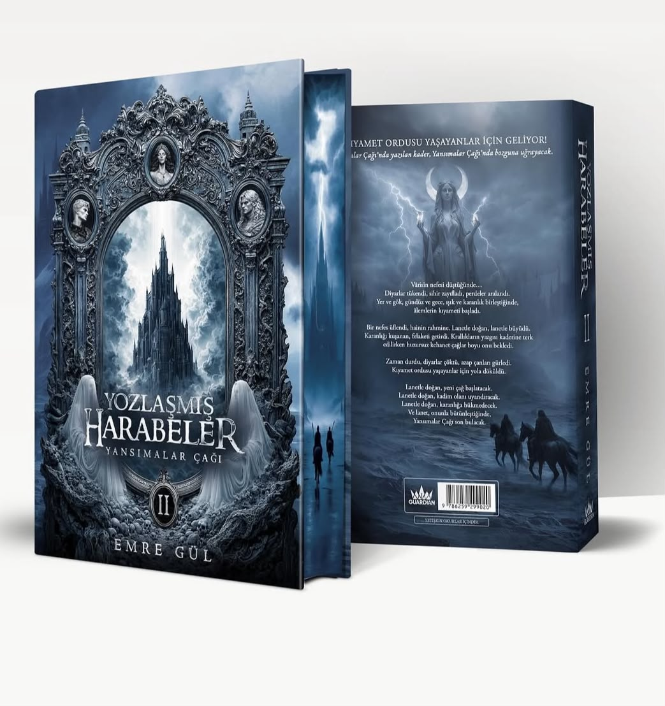

KIYAMET ORDUSU YAŞAYANLAR İÇİN GELECEK!
Aynalar Çağı’nda yazılan kader, Yansımalar Çağı’nda bozguna uğrayacak.
Vârisin nefesi düştüğünde…
Diyarlar tükendi, sihir zayıfladı, perdeler aralandı.
Yer ve gök, gündüz ve gece, ışık ve karanlık birleştiğinde, âlemlerin kıyameti başladı.
Bir nefes üflendi, hainin rahmine. Lanetle doğan, lanetle büyüdü.
Karanlığı kuşanan, felaketi getirdi.
Krallıkların yazgısı kaderine terk edilirken huzursuz kehanet çağlar boyu onu bekledi.
Zaman durdu, diyarlar çöktü, azap çanları gürledi.
Kıyamet ordusu yaşayanlar için yola döküldü.
Lanetle doğan, yeni çağ başlatacak.
Lanetle doğan, kadim olanı uyandıracak.
Lanetle doğan, karanlığa hükmedecek.
Ve lanet, onunla bütünleştiğinde, Yansımalar Çağı son bulacak.
Uyarı: Yetişkin okurlar içindir.